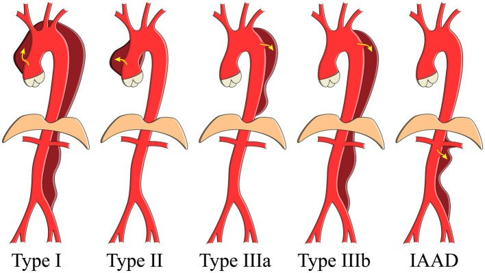
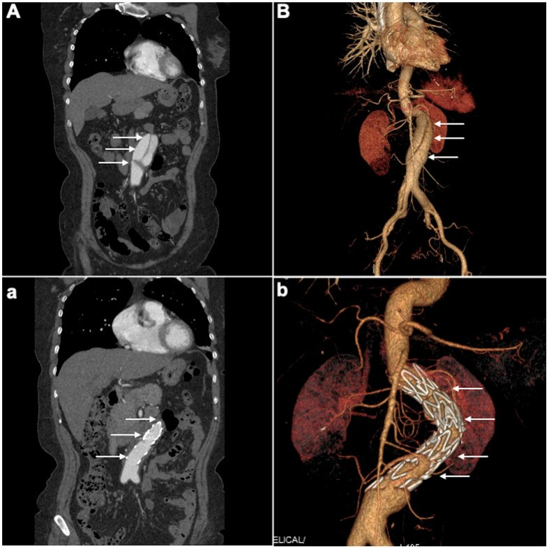
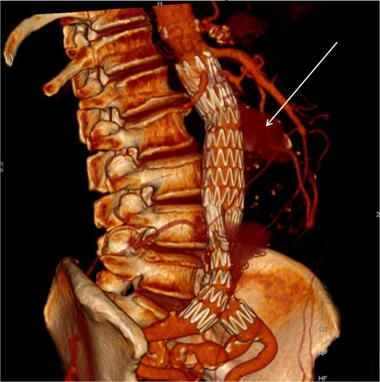
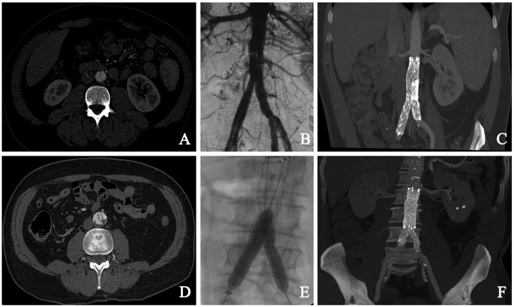

172 — Theo dõi & biến chứng sau can thiệp bóc tách động mạch chủ bụng / Follow-up after endovascular repair of abdominal aortic dissection
Tags: pattern:boc-tach pattern:endoleak vung:DMC-bung score:endoleak protocol:CTA-theo-doi protocol:FEVAR
Mức chắc chắn (certainty): tổng hợp y văn (literature synthesis) — số liệu từ đoàn hệ tiến cứu IAAD (PMC9996307), loạt EVAR có CTA 8 năm (PMC5152934), loạt FEVAR dài hạn (PMC5485015) và tổng quan endoleak type II (PMC4780400); chưa có RCT riêng cho lịch chụp sau can thiệp IAAD.
1. Tổng quan bệnh học – cơ chế hình ảnh
- Bóc tách động mạch chủ bụng đơn độc (isolated abdominal aortic dissection, IAAD): vạt nội mạc tách lớp trong động mạch chủ dưới cơ hoành, không lan lên ngực. IAAD chiếm 1,3% tổng số bóc tách ĐMC trong registry IRAD và khoảng 5,1/1.000.000 người/năm; 67,6% nằm dưới động mạch thận. Trong đoàn hệ 68 ca: tuổi trung bình 61,2, nam 80,9%, tăng huyết áp 74,5%, đường kính ĐMC 27,6 ± 9,9 mm.
- TẠI SAO đặt stent có ích: stent-graft phủ lỗ vào (entry tear) → lòng thật được mở rộng, lòng giả mất áp lực hệ thống và huyết khối dần. Nhưng lòng giả có thể vẫn thông qua nhánh tạng, động mạch thắt lưng, mạc treo dưới hoặc lỗ vào thứ phát ở xa — vì vậy “đặt stent xong” không đồng nghĩa “khỏi bệnh”; theo dõi phải đánh giá cả lòng thật, lòng giả và nhánh tạng.
- TẠI SAO CTA 3 pha: pha không cản quang phân biệt vôi hóa với endoleak; pha động mạch thấy type I/III và lòng thật; pha muộn 70–120 giây thấy type II lưu lượng thấp (dòng ngược từ nhánh). Thiếu pha muộn là lý do sót type II.
- Kết cục sau can thiệp: trong 68 ca IAAD, 55,9% điều trị nội khoa, 39,7% EVAR, 4,4% mổ mở; theo dõi trung bình 2,4 năm, tử vong 13,2% (nội khoa 21,0% vs EVAR 3,7%). Sống 5 năm toàn đoàn hệ 84,8%; nhóm EVAR/mổ 96,6% vs nội khoa 76,3%. Ba ca nội khoa phải chuyển EVAR ở 1,3; 1,7; 1,9 năm.
- Ngưỡng can thiệp IAAD: đường kính > 3 cm, vỡ, malperfusion (thiếu máu tạng/chi) hoặc đau không giảm dù kiểm soát huyết áp. IAAD có thể vỡ ở khoảng 15%, tử vong 17–28%; mổ mở có tử vong trong viện 25–30% so với 10% ở can thiệp nội mạch; một loạt EVAR ghi nhận tử vong 30 ngày 0%.

Sơ đồ phân loại: type I–IIIb và IAAD (cột phải) — bóc tách chỉ khu trú ở ĐMC bụng. Nguồn: Wu J và cs., Front Cardiovasc Med 2023;10:1002832 (PMC9996307), Fig. 1, CC BY 4.0.2. Mẫu hình + chẩn đoán phân biệt theo vị trí (gamut)
Mẫu hình theo thời điểm sau can thiệp — mỗi mốc có biến chứng ưu tiên:
- Sớm (≤ 30 ngày): biến chứng tại chỗ chọc (giả phình, máu tụ, hẹp/tắc mạch đùi), endoleak type I/III, tắc nhánh tạng (động mạch thận → tăng creatinin/thiếu niệu), thiếu máu tủy sống (nhất là khi phủ động mạch thắt lưng dài), bóc tách ngược dòng (retrograde type A) sau TEVAR.
- Trung hạn (1–12 tháng): endoleak type II (dòng ngược mạc treo dưới/thắt lưng), hẹp nhánh tạng sau FEVAR, lòng giả còn thông một phần, túi giảm chậm hoặc không giảm.
- Muộn (> 12 tháng): di trú/gãy/kink stent, type I/III muộn, nhiễm trùng graft/rò chủ–ruột, phình mới ở vùng tiếp giáp, tắc nhánh tạng muộn, giãn lòng giả.
Gamut “túi/đường kính tăng sau can thiệp”: endoleak type I/III (áp lực hệ thống), type II có tăng túi, type V/endotension (tăng áp lực không thấy rò), nhiễm trùng graft, phình mới/progression, hoặc sai số đo (khác mặt cắt/khác pha). Với bóc tách, thêm: lòng giả giãn do còn thông với lỗ vào xa hoặc nhánh lớn.

Trên: CTA trước can thiệp (A) và dựng 3D (B) — vạt nội mạc, hai lòng. Dưới: sau EVAR (a, b) — stent phủ lỗ vào, lòng giả không còn ngấm thuốc. Nguồn: Shaiea S và cs., J Clin Med 2025;14:5849 (PMC12387512), Fig. 4, CC BY 4.0.3. Bảng so sánh phân biệt (ma trận đối chiếu)
| Thực thể (entity) | Hình ảnh điển hình | Chốt vào (rule-in) | Chốt loại (rule-out) | Gợi ý xác nhận |
|---|---|---|---|---|
| Endoleak type I/III | Rò ở cổ trên/dưới (Ia/Ib) hoặc khớp graft (III); ngấm sớm thì động mạch | Ngấm thuốc sớm, cùng áp lực hệ thống, túi tăng nhanh | Ngấm muộn 70–120 giây + nhánh vào → type II | CTA 3 pha; sửa ngay bằng cuff/nối thêm |
| Endoleak type II | Dòng ngược từ mạc treo dưới/thắt lưng vào túi; thấy rõ pha muộn | Ngấm muộn + thấy nhánh vào/ra + túi ổn định | Ngấm sớm + cổ/khớp → type I/III | CTA muộn/CEUS; chỉ can thiệp khi túi tăng ≥ 5 mm |
| Type V/endotension | Túi tăng nhưng không thấy rò trên CTA 3 pha | Loại trừ I–IV + túi tăng ≥ 5 mm | Có rò kín đáo trên CEUS/MRI → không phải V | CEUS/MRI, đo thể tích, theo dõi sát |
| Hẹp/tắc nhánh tạng (FEVAR) | Hẹp gốc stent nhánh thận/ĐM mạc treo tràng trên; thận giảm ngấm | Hẹp có ý nghĩa + tăng creatinin/thiếu máu tạng | Nhánh thông tốt, creatinin ổn định → theo dõi | CTA/duplex, DSA nong/stent lại |
| Lòng giả còn thông/giãn | Vạt nội mạc còn, lòng giả ngấm thuốc; đường kính lòng giả tăng | Lòng giả còn ngấm + tăng đường kính theo thời gian | Lòng giả huyết khối hoàn toàn, không tăng | CTA các thì, so sánh cùng mức |
| Di trú/gãy/kink stent | Stent lệch khỏi vị trí, gãy khung, gập góc | Di trú đáng kể + hở cổ/mất seal | Stent đúng vị trí, không hở | X-quang/CTA, so phim gốc |
| Nhiễm trùng graft/rò chủ–ruột | Khí quanh graft, tụ dịch, giả phình; rò khí/ruột | Khí trong túi/graft + sốt + cấy dương | Khí thoáng qua sau mổ, không sốt → theo dõi | CT có cản quang, PET/CT, nội soi |
| Biến chứng tại chỗ chọc | Giả phình, máu tụ, hẹp mạch đùi | Khối đập theo mạch + hẹp > 50% trên duplex | Máu tụ đơn thuần, mạch đùi bình thường | Duplex, CTA, sửa nếu có triệu chứng |

Dựng 3D CTA sau EVAR: mũi tên chỉ dòng ngược từ nhánh vào túi — type II. Nguồn: Brown A và cs., Vasc Health Risk Manag 2016;12:53–63 (PMC4780400), Fig. 2, CC BY-NC 3.0 (giữ nguyên, không chỉnh sửa).4. Protocol chụp + hệ phân độ/điểm chuẩn hóa
- CTA 3 pha (không cản quang + động mạch + muộn 70–120 giây) là chuẩn theo dõi; đo đường kính túi theo trục nhỏ trên mặt cắt ngang, cùng mức và cùng pha với lần trước. Túi tăng ≥ 5 mm so với CTA trước EVAR (trong 6 tháng) được coi là tăng có ý nghĩa.
- Lịch theo ESVS: CTA + X-quang trong 30 ngày; nếu không endoleak/biến chứng, lặp hình ảnh khoảng mỗi 12 tháng. Với FEVAR, các loạt lớn dùng mốc 1 tháng, rồi 6–12 tháng/lần và hằng năm vì nhánh tạng có thể hẹp muộn — đây là thực hành giám sát, chưa có RCT ấn định khoảng cách.
- Thay thế/ bổ sung: duplex có cản quang (CEUS) nhạy với dòng chậm, không nhiễm xạ; MRI/MRA khi cần đánh giá lòng giả và nhánh, nhưng kim loại gây nhiễu. X-quang/fluoroscopy để phát hiện gãy khung, di trú, mất khớp nối.
- Phân độ endoleak (I–V) là hệ phân loại chuẩn để quyết định: I/III → can thiệp; II → theo dõi nếu túi ổn định, can thiệp nếu túi tăng ≥ 5 mm; V → loại trừ I–IV, theo dõi sát.
- Số liệu FEVAR: 173 bệnh nhân, 572 nhánh tạng; thành công kỹ thuật ban đầu 79,2%, sau chỉnh sửa 95,4%; theo dõi trung vị 34 tháng; sống 5 năm 59,4%; không còn mất nhánh ở 90,1% sau 5 năm; không can thiệp lại ở 62,8% sau 5 năm (tức 37,2% phải can thiệp lại); không có tử vong do phình. Tổng quan FEVAR/CH-EVAR: patency 95,9% (FEVAR) và 97% (CH-EVAR); can thiệp lại 10,7% vs 9,5%; tử vong 30 ngày 1,1% vs 3,8%.
- Type II dai dẳng: tỷ lệ chung 3,8–45%; type I gặp 5–30%. Trong registry Nhật, type II dai dẳng làm tăng nguy cơ tăng túi, can thiệp lại và vỡ/tử vong do phình ~2% ở 10 năm; yếu tố nguy cơ gồm tuổi, nữ, đường kính cổ gần, bệnh thận mạn.
flowchart TD
A[CTA sau EVAR/FEVAR] --> B{Có endoleak?}
B -->|Không| C{Túi tăng ≥ 5 mm?}
C -->|Không| D[Theo dõi 12 tháng/lần]
C -->|Có| E[Nghĩ type V: CEUS/MRI, loại trừ I–IV]
B -->|Type I hoặc III| F[Can thiệp: cuff/nối thêm/che phủ]
B -->|Type II| G{Túi tăng ≥ 5 mm?}
G -->|Không| H[Theo dõi CTA/CEUS 6–12 tháng]
G -->|Có| I[Nút nhánh vào–ra, glue/Onyx hoặc mổ]
F --> J[CTA kiểm tra sau can thiệp]
I --> J
E --> J
5. Biến thể bình thường và cạm bẫy
- Thiếu pha muộn là lỗi thường gặp nhất: type II lưu lượng thấp chỉ hiện ở 70–120 giây; một pha động mạch có thể “sạch” giả tạo.
- Vôi hóa thành ĐMC trông như ngấm thuốc trên pha có cản quang — luôn đối chiếu pha không cản quang.
- Nhiễu kim loại của khung stent có thể giả type III; đổi mặt cắt, dựng lại theo trục stent, dùng pha muộn để xác nhận.
- Túi tăng không thấy rò = nghĩ type V/endotension, nhưng trước hết phải loại trừ type II kín đáo bằng CEUS/MRI; đừng mổ ngay chỉ vì một lần đo.
- Lòng giả huyết khối một phần không phải là thành công hoàn toàn; có thể tái thông, nhất là khi còn nhánh lớn cấp máu.
- Hẹp nhánh tạng có thể không triệu chứng — creatinin tăng nhẹ sau FEVAR phải tìm hẹp gốc stent thận trước khi quy về thuốc cản quang.
- IAAD dễ bị nhầm với phình có huyết khối thành nếu chỉ nhìn một mặt cắt; tìm vạt nội mạc + hai lòng trên nhiều bình diện và dấu di lệch vôi hóa.
- Sốt sau EVAR có thể là phản ứng viêm, nhưng khí quanh graft/tụ dịch phải loại trừ nhiễm trùng — không hạ sốt đơn thuần rồi bỏ theo dõi.
6. Tự lượng giá — Blind Quiz
Ca 1 — Nam 71 tuổi, đau bụng–lưng; CTA trước mổ, mổ đặt stent, và CTA 8 năm sau.

- Gợi ý: đau bụng và lưng, tăng huyết áp; không có phình ĐMC; tổn thương giới hạn dưới động mạch thận.
- Câu hỏi: Ảnh A cho thấy gì? Can thiệp nào đã làm? Ảnh C nói gì sau 8 năm?
Bấm để hiện đáp án (findings + chẩn đoán)
- Dấu hiệu: (A) vạt nội mạc, hai lòng — IAAD; (B) chụp mạch hoàn tất sau đặt stent; (C) CTA 8 năm: stent đúng vị trí, không tái phát, không giãn, lòng giả không còn.
- Chẩn đoán: IAAD được điều trị bằng stent-graft chia đôi; theo dõi CTA 1 tháng, duplex 3–6–12 tháng rồi hằng năm.
- Bài học: IAAD không có phình vẫn có thể cần can thiệp khi đau không giảm; theo dõi dài hạn cho thấy stent bền.
- Nguồn: Giribono AM và cs., Acta Radiol Open 2016;5:2058460116681042 (PMC5152934), Fig. 1, CC BY-NC 3.0 (giữ nguyên, không chỉnh sửa).
Ca 2 — CTA trước và sau EVAR ở bệnh nhân bóc tách ĐMC bụng; mũi tên chỉ lòng giả.
- Gợi ý: bóc tách khu trú dưới động mạch thận; stent phủ lỗ vào.
- Câu hỏi: Trước mổ có gì? Sau mổ thay đổi ra sao? Còn nguy cơ gì?
Bấm để hiện đáp án (findings + chẩn đoán)
- Dấu hiệu: trước mổ — vạt nội mạc, lòng giả chiếm ưu thế (A, B); sau mổ — stent phủ lỗ vào, lòng giả không còn ngấm thuốc, lòng thật mở rộng (a, b).
- Chẩn đoán: IAAD điều trị EVAR; nguy cơ còn lại là endoleak type II từ nhánh, hẹp nhánh tạng, hoặc lòng giả tái thông qua lỗ vào xa.
- Theo dõi: CTA 3 pha ở 30 ngày và 12 tháng; đo túi/lòng giả cùng mức.
- Nguồn: Shaiea S và cs., J Clin Med 2025;14:5849 (PMC12387512), Fig. 4, CC BY 4.0.
Ca 3 — Sau EVAR, CTA 3D thấy dòng ngược vào túi. Phân loại và xử trí?
- Gợi ý: bệnh nhân không đau, túi không đổi sau 6 tháng; không có sốt.
- Câu hỏi: Đây là type mấy? Nguồn dòng? Khi nào mới can thiệp?
Bấm để hiện đáp án (findings + chẩn đoán)
- Dấu hiệu: dòng ngược từ nhánh (mạc treo dưới/thắt lưng) vào túi, thấy rõ ở pha muộn — endoleak type II.
- Xử trí: theo dõi nếu túi ổn định; can thiệp (nút cả đầu vào–ra, glue/Onyx, hoặc mổ) khi túi tăng ≥ 5 mm, type II dai dẳng có tăng túi.
- Cạm bẫy: thiếu pha muộn dễ bỏ sót; đừng nút một đầu vì còn dòng “flow-through”.
- Nguồn: Brown A và cs., Vasc Health Risk Manag 2016;12:53–63 (PMC4780400), Fig. 2, CC BY-NC 3.0 (giữ nguyên, không chỉnh sửa).
Bài liên quan chéo
- 100 – Tổng quan hệ Bụng
- 171 – Bóc tách ĐMC bụng & IMH
- 170 – Phình ĐMC bụng: dọa vỡ, vỡ & rò
- 840 – AAA sau EVAR: Endoleak I–V & PAD
- 920 – Nút mạch trong chảy máu tiêu hóa & can thiệp mạch
Không dùng để chẩn đoán độc lập khi chưa có người hướng dẫn.